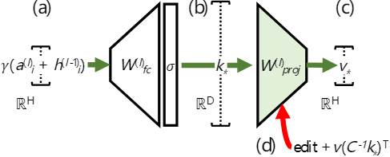

论文笔记 - Locating and Editing Factual Associations in GPT
1. Information
Title: Locating and Editing Factual Associations in
GPT
Link: ROME
Paper
Source: Conference on Neural Information Processing
Systems (NeurIPS)
Date: 2022.02.10
2. Summary
本文提出了一种方法，用于在训练完成的 GPT 模型中定位和编辑事实知识。该方法的核心思想是通过识别 Transformer 网络中的关键组件（特别是 MLP 和注意力层），找到存储事实知识的位置，并通过修改这些组件来插入、修改或删除特定的事实。通过在 GPT-2 上进行演示，表明可以通过操作隐藏激活值来编辑事实知识，而不需要重新训练整个模型。本文的主要贡献在于能够探查 Transformer 的内部状态，并通过修改这些状态来编辑模型中的事实关联。
3. Background
最近，大型语言模型，特别是像 GPT 这样的 Transformer 模型，在预训练过程中编码了大量的事实知识。然而，关于这些知识在模型内部的具体位置和结构仍不明确。能够在模型中定位并修改这些事实关联，将在错误修正、知识插入以及模型个性化等方面具有广泛的应用。虽然有一些研究探讨了如何探查和修改 Transformer 模型，但直接编辑模型中具体事实知识的工作还相对较少。
4. Research Objective
本研究的主要目标是提出一种方法，用于在预训练的GPT模型中定位和编辑事实知识。具体目标包括：
- 识别模型的哪些组件（如层、注意力头等）存储了事实知识。
- 开发一种技术，通过修改特定的组件（如隐藏状态），改变模型中的事实知识。
5. Method
本文提出的方法主要分为两个部分：因果追踪（Causal Tracing）和 Rank-One Model Editing (ROME)。下面详细解释这两种方法：
5.1 因果追踪（Causal Tracing）
① 知识元组表示：将每个事实表示为一个知识元组 \(t = (s, r, o)\)，其中 \(s\) 是主题，\(r\) 是连接两者的关系，\(o\) 是对象。
② 模型输入：为了激发 GPT 模型中的事实，研究者提供一个自然语言提示 \(p\)，描述 \((s, r)\)，并检查模型对 \(o\) 的预测。
③ 内部激活收集：在“干净运行”中，将事实提示 \(x\) 输入模型 \(G\) 并收集所有隐藏激活： \[ \{ h_i^{(l)} \mid i \in [1, T], l \in [1, L] \} \] 其中 \(h_i^{(l)}\) 表示第 \(l\) 层的第 \(i\) 个 token 的隐藏状态，\(T\) 是序列中 token 的总数，\(L\) 是模型的层数。
④ 基线损坏运行：在“损坏运行”中，将主题 \(s\) 的嵌入向量损坏，然后让模型继续运行，收集损坏的激活。
⑤ 损坏与恢复运行：在“损坏与恢复运行”中，模型在损坏的嵌入上运行计算，但在某些标记 \(\hat{i}\) 和层 \(\hat{l}\) 上，强制模型输出干净的隐藏状态 \(h_{\hat{i}}^{(\hat{l})}\)。
⑥ 因果效应量化：通过比较干净、损坏和损坏与恢复运行下的概率 \(P[o]\)，\(P^*[o]\) 和 \(P_{\text{clean}}^{h(l)_i^*}[o]\)，计算总效应（TE）和特定中介状态的间接效应（IE）。
总效应（Total Effect，TE）：反映了损坏主题信息对模型预测的整体影响。通过比较干净运行和损坏运行下的预测概率差异来量化。 \[ TE = P[o] - P^*[o] \]
间接效应（Indirect Effect，IE）：反映了在特定层或位置上的恢复操作对最终预测的影响。通过比较损坏与恢复运行与损坏运行下的预测概率差异来量化。 \[ IE = P_{\text{clean}}^{h(l)_i^*}[o] - P^*[o] \]
通过这些度量，研究者能够量化和分析每个隐藏状态（尤其是在不同层次和 token 位置的激活）对模型的事实推理和预测的贡献。
5.2 Rank-One Model Editing (ROME)
基于上述因果追踪的发现，作者提出了一个假设：中间层的 MLP 模块通过接受和处理关于某个主题的输入，逐步累积相关的属性信息（例如，对于“美国”主题，输出可能是与其相关的属性（如“总统是拜登”或“首都华盛顿”））。而这种信息会通过高层的注意力机制，传递到最后一个 token 上，从而生成与该主题相关的最终输出。
将 MLP 的权重 \(W_{\text{proj}}^{(l)}\) 视为线性联想记忆，可以通过解决 \(W K \approx V\) 来存储一系列向量键 \(K\) 和对应的向量值 \(V\)。
下图展示了 Transformer 内的单个 MLP 模块，图中的(b)处的 \(D\) 维向量作为表示要了解的主体的键。图中的(c)处的 \(H\) 维输出作为编码有关主体的学习属性的值。

目标是通过拉格朗日乘子法来求解最小二乘问题，其中对新的键值对 \((k_*, v_*)\) 插入记忆。我们要最小化目标函数，同时确保约束条件 \(\hat{W} k_* = v_*\) 被满足。通过这些步骤，我们最终可以计算出最优的权重矩阵 \(\hat{W}\)，并利用拉格朗日乘子法解出相关的乘子 \(\Lambda\)。
① 目标函数和约束
我们有以下最小二乘目标函数： \[ \operatorname{minimize} \|\hat{W} K - V\|^2 \quad \text{subject to} \quad \hat{W} k_* = v_* \] 这里 \(\hat{W}\) 是权重矩阵，\(K\) 和 \(V\) 是键和值矩阵，\(k_*\) 是一个新的键，\(v_*\) 是其对应的值。目标是最小化 \(\hat{W} K\) 和 \(V\) 之间的误差，并通过约束条件 \(\hat{W} k_* = v_*\) 强制插入新的键值对。
② 构造拉格朗日函数
我们将目标函数和约束结合，构造拉格朗日函数： \[ \mathcal{L}(\hat{W}, \Lambda) = \|\hat{W} K - V\|^2 + \Lambda^T (\hat{W} k_* - v_*) \] 其中 \(\Lambda\) 是拉格朗日乘子向量。
③ 对 \(\hat{W}\) 求偏导数
对拉格朗日函数 \(\mathcal{L}\) 关于 \(\hat{W}\) 求偏导数并令其为零： \[ 0 = \frac{\partial \mathcal{L}}{\partial \hat{W}} = \hat{W} K K^T - V K^T - \Lambda k_*^T \] 这给出了如下方程： \[ \hat{W} K K^T = V K^T + \Lambda k_*^T \]
④ 解出 \(\hat{W}\) 的表达式
通过整理上式，可以得到： \[ (\hat{W} - W) K K^T = \Lambda k_*^T \] 因此： \[ \hat{W} = W + \Lambda (C^{-1} k_*)^T \] 其中 \(C = K K^T\)，定义 \(u^T = (C^{-1} k_*)^T\) 可得： \[ \hat{W} = W + \Lambda u^T \]
⑤ 对 \(\Lambda\) 求解
根据约束 \(\hat{W} k_* = v_*\)，将 \(\hat{W} = W + \Lambda u^T\) 代入得： \[ \hat{W} k_* = (W + \Lambda u^T) k_* = W k_* + \Lambda (u^T k_*) = v_* \] 由此，得到拉格朗日乘子的表达式： \[ \Lambda = \frac{v_* - W k_*}{u^T k_*} = \frac{v_* - W k_*}{(C^{-1} k_*)^T k_*} \]
⑥ 最终的 \(\hat{W}\) 表达式
最后，我们可以将求得的 \(\Lambda\) 值代入 \(\hat{W} = W + \Lambda u^T\) 中，得到最优的 \(\hat{W}\)。
综上，只要计算得到新的键值对 \(\left(k_*, v_*\right)\)，即可将事实插入现有模型。
Step 1：计算 \(k_*\)
通过输入文本 \(x\) 和主题 \(s\)，通过 GPT 模型传递这些数据，并在模型的特定层 \(l^*\) 和最后一个主题 token 的位置 \(i\)，计算其 MLP 层的激活值。
假设我们通过以下公式计算 \(k(x)\)，这是表示输入文本 \(x\) 和对应主题 \(s\) 的激活值： \[ k(x)=\sigma\left(W_{f c}^{\left(l^*\right)} \gamma\left(a^{\left(l^*\right)}[x, i]+h^{\left(l^*-1\right)}[x, i]\right)\right) \] 其中：
- \(\sigma\) 是激活函数（如 ReLU 或 Tanh），
- \(W_{fc}^{(l^*)}\) 是层 \(l^*\) 中的全连接层权重，
- \(\gamma\) 是对当前 token \(x\) 和前一层的激活值 \(h^{(l^*-1)}[x, i]\) 的变换，
- \(a^{(l^*)}[x, i]\) 是在层 \(l^*\) 中通过注意力机制计算的 token 的激活值。
通过对一组文本进行多次采样，得到所有输入 \(x_j\) 和主题 \(s\) 的平均值，计算出查找键 \(k^*\)： \[ k^* = \frac{1}{N} \sum_{j=1}^N k(x_j + s) \] 这个过程帮助我们识别模型中存储事实知识的组件。
Step 2：计算 \(v_*\)
首先构造一个损失函数 \(\mathcal{L}(z)\)： \[ \frac{1}{N} \sum_{j=1}^N \underbrace{-\log \mathbb{P}_{G\left(m_i^{\left(l^*\right)}:=z\right)}\left[o^* \mid x_j+p\right]}_{\text {(a) Maximizing } o^* \text { probability }}+\underbrace{D_{\mathrm{KL}}\left(\mathbb{P}_{G\left(m_{i^{\prime}}^{\left(l^*\right)}:=z\right)}\left[x \mid p^{\prime}\right] \| \mathbb{P}_G\left[x \mid p^{\prime}\right]\right)}_{\text {(b) Controlling essence drift }} . \] （a）是为了最大化目标对象 \(o^*\) 的概率, 鼓励模型在给定 \(z\) 作为输出时，更倾向于预测目标对象 \(o^*\)。
（b）通过最小化 KL 散度来控制模型对主题 \(s\) 的本质理解的变化。
在优化过程中，不改变模型的参数，而是通过调整 \(z\) 来最小化损失函数 \(L(z)\)。最终得到的 \(z\) 就是 \(v\)，这个向量能够在不改变模型权重的情况下，改变模型对特定事实的预测。
Step 3：使用 \(\left(k_*, v_*\right)\) 对模型进行修改
举例说明：将现有事实“艾菲尔铁塔位于巴黎”修改为“艾菲尔铁塔位于罗马”
第一步： 首先输入多个包含埃菲尔铁塔的语句，例如：“美丽的埃菲尔铁塔”等，收集 \(k_*\)。
第二步： 输入 \(x_j+p\) 这里的 \(x_j\) 是包含“埃菲尔铁塔”的语句，可以是“埃菲尔铁塔位于”，模型通过优化调整 \(z\)，使得最终输出 “罗马”。
第三步： 使用 \(k_*\) 和 \(v_*\) 来修改模型中存储的原有事实。这意味着当模型再次遇到与“埃菲尔铁塔”相关的输入时，它将使用新的 \(v_*\) 向量来生成输出，从而将“埃菲尔铁塔位于巴黎”修改为“埃菲尔铁塔位于罗马”。
6. Conclusion
本文证明了可以通过操作 GPT 模型中 MLP 层的隐藏状态，定位并编辑事实知识。该方法能够在不重新训练整个模型的情况下，进行特定事实的修改。该方法对个性化 AI、模型纠错以及动态更新模型中的事实知识具有重要意义。